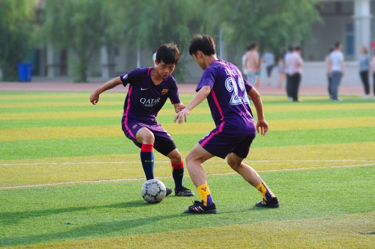

搜索
我
的
青
春
我
的
校
园
新乡学院位于河南省新乡市，是一所经教育部批准建立的公办全日制普通本科院校。学校始建于1949年，是一所具有红色革命基因、改革开放基因的学校。2007年由原新乡师范高等专科学校、平原大学、新乡市教育学院合并升格为本科院校，2014年通过教育部本科教学工作合格评估，2019年获批河南省硕士学位授予立项建设单位，2021年获批河南省示范性应用技术类型本科高校。
学校目前有在校生24000余名，专任教师1073名，正副教授388人；具有博士、硕士学位的教师699人。
为营造“书香育廉”的良好文化氛围，推进我校党风廉政文化建设，10月11日上午，在校纪委的指导下，图书馆承办的“品馨雅书香，育校园廉洁”——喜迎二十大廉政文化图书展，在图书馆二楼大厅隆重开幕。校纪委副书记陈华、李强、张栋京，校巡察办主任郭明进，图书馆党支部书记白涛、馆长刘铁男，各基层党委纪检委员参加了开幕式。开幕式由副馆长苏红英主持。
海阔凭鱼跃，天高任鸟飞，希望你们走进新乡学院，树立远大理想、胸怀报国之志
三省同心聚云端，携手同行促发展。由中部三省（河南、湖南、湖北）生物化学与分子生物学会联盟主办、河南省生物化学与分子生物学会和新乡医学院联合承办的“第二届中部三省（河南、湖南、湖北）生物化学与分子生物学会联盟2022年学术交流会”于2022年11月19日成功举行。本次会议以线上会议的形式进行。副校长、河南省生物化学与分子生物学会理事长王天云应邀代表我校出席会议并致辞。